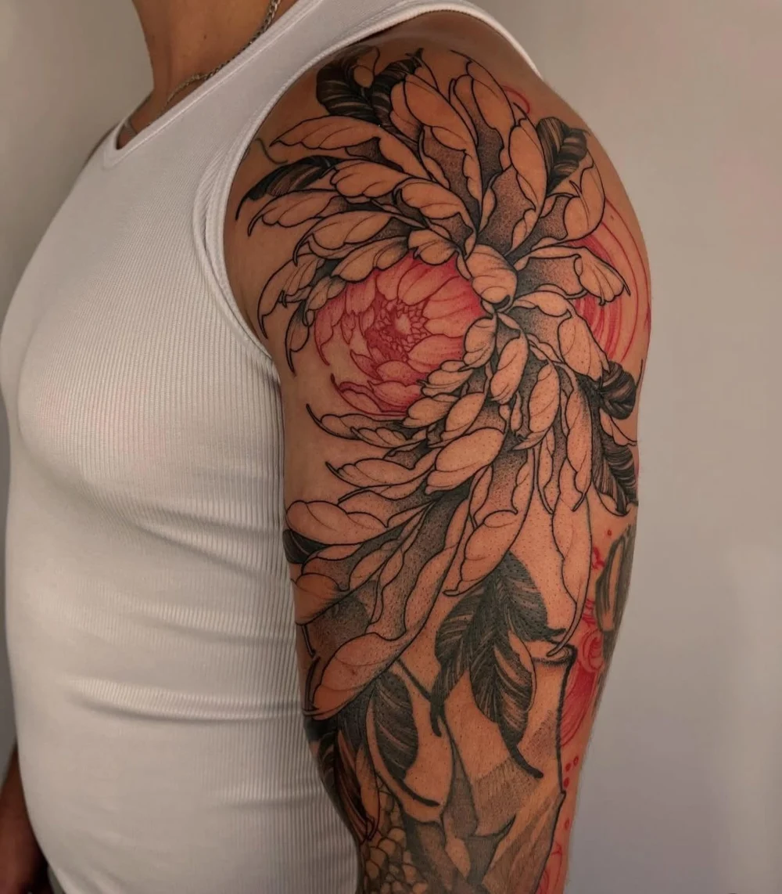
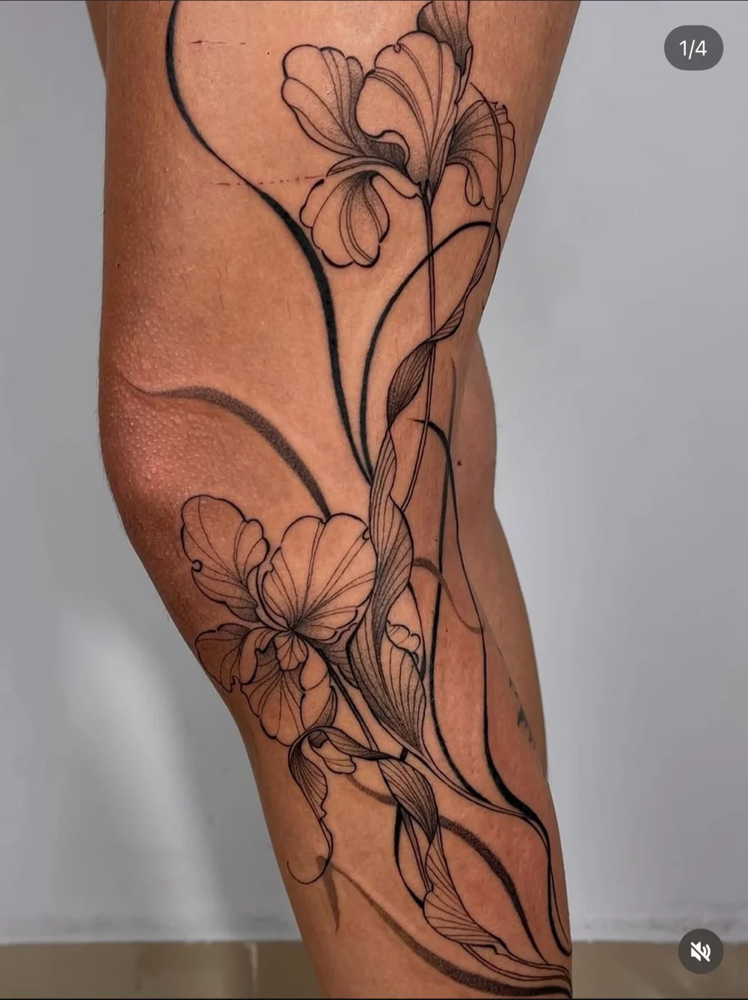
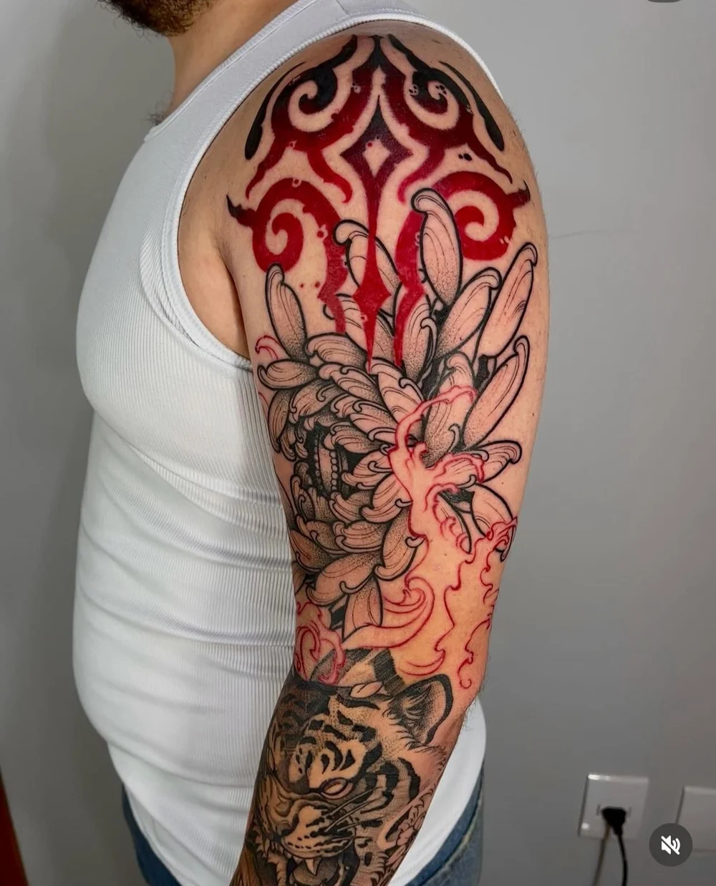

Tatuagem autoral. Presença de verdade.
O CORPOGUARDAMITOS.
O gesto encontra
a pele.
Uma tatuagem não termina no desenho. Ela ganha outra vida quando acompanha as curvas, os movimentos e a história de quem a carrega.
É desse encontro que nasce o trabalho de Ítala Sarah.

FORÇA
serena.
PELE COMO
TERRITÓRIO.
Dragões, flores, guardiões e gestos.
Encontre o que conversa com você.
Dragão e cerejeiras
Oriental
Entre duas kitsunes
Oriental
Mariposa em flor
Botânico
Fluxo carmim
Abstrato{kind=link}
Guardião em preto
Blackwork{kind=link}

Dragão e crisântemo
Oriental{kind=link}

Botânica em movimento
Botânico{kind=link}

Entre preto e vermelho
OrientalToque em uma obra para ver os detalhes.
Continue explorando no InstagramTRAÇO
FIRME.
Olhar livre.
Meu trabalho atravessa referências orientais, botânicas e abstratas. O que conecta tudo é o movimento: a linha, o contraste e a forma de cada desenho encontrar seu lugar no corpo.
Gosto de começar pela sua ideia. O desenho vem desse encontro.
Vamos conversar sobre a sua?ANTES DA TINTA,
uma conversa.
Você traz a ideia.
A gente encontra a forma.
- 01
Escutar a sua ideia.
Conte o que imagina, onde quer tatuar, o tamanho aproximado e a cidade em que deseja ser atendido.
- 02
Desenhar com o corpo.
Referências, símbolos e anatomia ajudam a construir uma composição com sentido para você.
- 03
Dar tempo à obra.
A sessão é uma etapa. Depois, os cuidados e a cicatrização também fazem parte da experiência.
A PELE MUDA.
A arte continua.
Acompanhar um trabalho cicatrizado é olhar para a tatuagem com o tempo a favor. Aqui, o registro da mesma composição no dia da sessão e após três meses.
Tire suas dúvidas com a artista
Histórias com pulso.
UM POUCO
mais de clareza.
Preciso ter o desenho pronto?
Não. Você pode começar contando a ideia e o que ela significa para você. Referências ajudam na conversa, mas não são obrigatórias para solicitar um orçamento.
Como peço um orçamento?
Preencha a ideia, região do corpo, tamanho aproximado e cidade no formulário abaixo. A mensagem será preparada para você enviar à Ítala no WhatsApp.
Em quais cidades posso ser atendido?
Ítala atende em Anápolis, Goiânia e Brasília. Consulte a disponibilidade para a sua cidade durante a conversa.
Como funcionam os cuidados depois?
Converse com a Ítala sobre os cuidados indicados para o seu trabalho e siga as orientações recebidas na sessão. O registro cicatrizado também faz parte do portfólio.
QUAL MITO
VIVE EM
você?
Uma ideia, um símbolo, uma vontade antiga.
Vamos dar forma ao que você tem em mente.